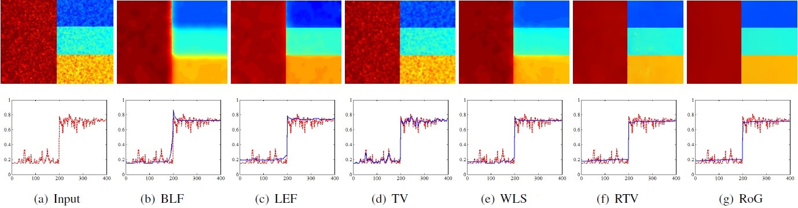
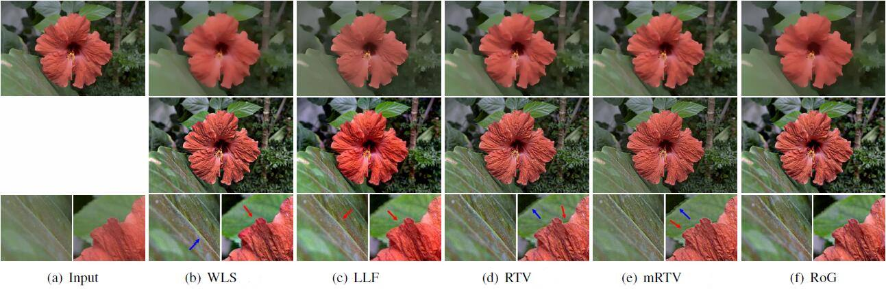
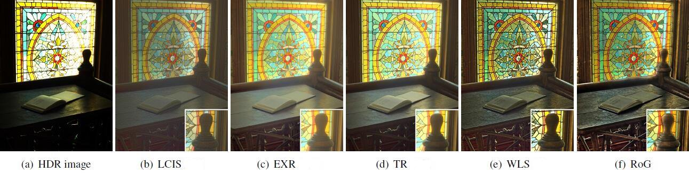
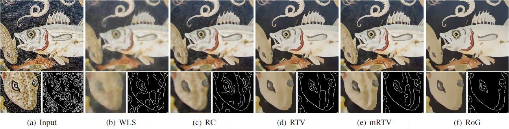
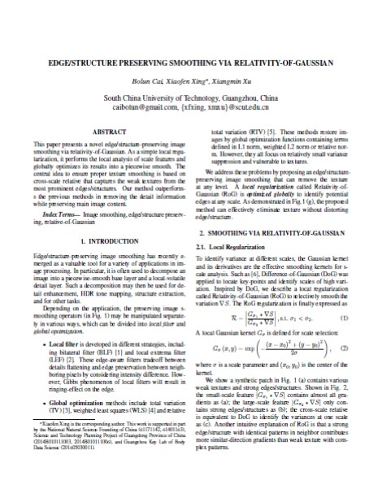

Bolun Cai, Xiaofen Xing, Xiangmin Xu
IEEE International Conference on Image Processing (ICIP), 2017 [NOTE! Best Paper Finalist]
[Slides (27.2MB)]
Bolun Cai Xiangmin Xu Xiaofen Xing
South China University of Technology
|  |
Compare different preserving image smoothing on a noisy image. (a) Input. (b) BLF (σs= 12, σr= 0.45). (c) LEF (r = 3). (d) TV (θ = 30). (e) WLS (λ = 0.35, α = 1.8). (f) RTV (λ = 0.015, σ = 3). (g) RoG (K = 3, λ = 0.01, σ1= 1, σ2= 3). |
Abstract
This paper presents a novel edge/structure-preserving image smoothing via relativity-of-Gaussian. As a simple local regularization, it performs the local analysis of scale features and globally optimizes its results into a piecewise smooth. The central idea to ensure proper texture smoothing is based on cross-scale relative that captures the weak textures from the most prominent edges/structures. Our method outperforms the previous methods in removing the detail information while preserving main image content.
Detail Enhancement (More)
HDR Tone Mapping (More)
Structure Extraction (More)

Downloads
|  |
"Edge/Structure Preserving Smoothing via Relativity-of-Gaussian" Bolun Cai, Xiaofen Xing, Xiangmin Xu IEEE International Conference on Image Processing (ICIP), 2017 [NOTE! Best Paper Finalist] [Slides (27.2MB)] |
Last update: February 07, 2017